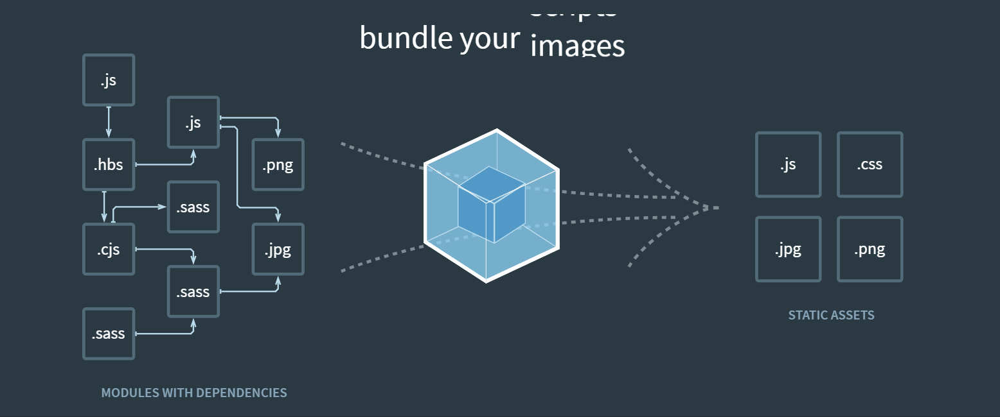

Concepts
- Webpack is a compiler which bundle modules with dependencies to static assets.

Ready
- your computer shoule have Node.js environment
- excuting an order : > npm install webpack webpakc-cli -g
(this can only support one version, if you want to support free, please install them inside the project) - make a direction and use npm init
- now everything is already, lets go
Configuration
- first, your folder will like this:
- create a new folder named src and create a new file index.js, its content like this:
- webpack can default bundle .js files(CMD), now we try to import a image:
- use file-loader to resovle the problem:
- url-loader and file-loader
Code
1 | const fs = require("fs"); |